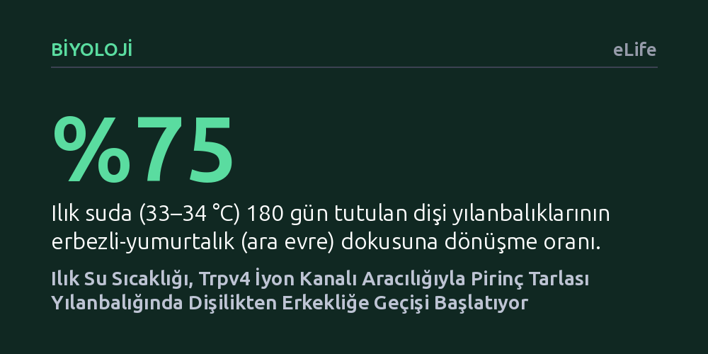

BIYOLOJI · eLife · 2026-09-08
Araştırmacılar, pirinç tarlası yılanbalıklarında çevre sıcaklığının dişiden erkeğe cinsiyet dönüşümünü nasıl tetiklediğini inceledi. Ilık suyun yumurtalıklardaki Trpv4 iyon kanalını uyararak kalsiyum ve pStat3 sinyalleri üzerinden erkeklik genlerini etkinleştirdiği gösterildi.
Sıcaklık gibi çevresel bir etkinin, canlılarda gen ifadesini ve cinsiyet değişimini özel bir hücresel ısı alıcısı üzerinden doğrudan nasıl yönlendirdiğini aydınlatıyor.

Memelilerde cinsiyet döllenme anında kromozomlarla belirlenirken, balık ve sürüngen gibi pek çok omurgalıda çevre koşulları devreye girer. Su sıcaklığı, asitlik veya popülasyon yoğunluğu gibi faktörler bireyin cinsiyetini doğrudan şekillendirebilir. Doğu Asya tatlı sularında yaşayan ve pirinç tarlası yılanbalığı olarak bilinen tür, bu açıdan dikkat çekici bir yaşam döngüsüne sahiptir. Bu balıklar hayata dişi olarak başlar; olgunlaşıp yaşlandıkça yumurtalıkları körelir, erbezi dokusu gelişir ve birey erkeğe dönüşür.
Ancak bu cinsiyet değişiminin ardındaki çevresel tetikleyiciler uzun süredir tam olarak çözülememişti. Özellikle sıcak bölgelerdeki popülasyonların daha erken yaşta ve daha küçük boyuttayken erkeğe dönüştüğü bilinmekteydi. Bu durum su sıcaklığının bir tetikleyici olduğunu düşündürse de sıcaklık bilgisinin hücre zarı tarafından nasıl algılandığı ve erkeklik genlerini hangi adımlarla ateşlediği bilinmiyordu.
Araştırmacılar ilk olarak Çin'in sıcak güneyindeki Hainan ile daha serin orta kesimindeki Wuhan'dan iki yaşındaki yabani yılanbalıklarını inceledi. Sıcak bölgedeki balıkların neredeyse dörtte birinin ara evrede (çift cinsiyetli) olduğu, serin bölgedekilerde ise bu oranın belirgin şekilde düşük kaldığı görüldü. Bu gözlemi sınamak amacıyla dişi balıklar 6 ay boyunca serin (25–26 °C) ve ılık (33–34 °C) sularda kontrollü olarak yetiştirildi.
Sıcaklık etkisinin arkasındaki hücresel mekanizmayı bulmak için yumurtalık dokusunda sıcaklığı hisseden iyon kanalları mercek altına alındı. Sıcaklığa duyarlı bir kalsiyum kanalı olan Trpv4 proteinini etkinleştiren ya da durduran kimyasal moleküller doğrudan dişi balıkların yumurtalıklarına enjekte edildi. Ayrıca hedefe yönelik gen susturma (siRNA) yöntemiyle Trpv4 ve ilişkili sinyal genleri geçici olarak kapatılarak hücresel akış adım adım test edildi.
Elde edilen sonuçlar, ılık suyun balık yumurtalığındaki Trpv4 iyon kanalını doğrudan açtığını gösterdi. Kanal açıldığında hücre içine kalsiyum akışı başlıyor ve bu kalsiyum artışı Stat3 adlı iletici proteini fosforilleyerek etkinleştiriyordu. Etkinleşen pStat3 proteini ise erkeklik yolunun ana şalteri sayılan dmrt1 genini baskıdan kurtaran Kdm6b enzimini devreye sokuyordu.
Deneyler bu mekanizmanın gücünü ortaya koydu: Serin suda tutulan dişi balıklara sadece Trpv4 uyarıcısı ilaç verildiğinde, ortam ılık olmasa bile erkeklik genleri hızla devreye girdi. Tersine, ılık suda tutulan balıklarda Trpv4 engellendiğinde sıcaklığın erkekliği başlatıcı etkisi tamamen engellendi. Benzer şekilde, yetişkin erkek balıklarda Trpv4 baskılandığında erbezinde dişi genlerinin yeniden yükselmeye başladığı saptandı.
Bu bulgular, sürüngenlerde iyi bilinen sıcaklığa bağlı cinsiyet mekanizmasının tatlı su balıklarında da benzer bir hücresel ısı sensörü ve epigenetik eksen üzerinden çalıştığını gösteriyor. Canlının çevresindeki fiziksel bir ısı değişimini iyon kanalları vasıtasıyla algılayıp kalıtsal programlara dönüştürmesi, çevresel cinsiyet belirlemenin evrimsel açıdan derin köklere sahip olduğunu vurguluyor.
Pratik açıdan ise pirinç tarlası yılanbalığı, Doğu Asya'da yıllık yüz binlerce ton üretilen ekonomik bir su ürünleri türüdür. Doğal yaşam döngüsünde dişilerin fazla, iri erkeklerin az olması üreticiler için önemli bir üreme darboğazı yaratmaktadır. Trpv4 ekseninin haritalanması, ısı ve hedefe yönelik müdahalelerle balıkların cinsiyet oranlarını yönetmeyi ve yetiştiricilik verimini artırmayı hedefleyen çalışmalara somut bir zemin sunmaktadır.